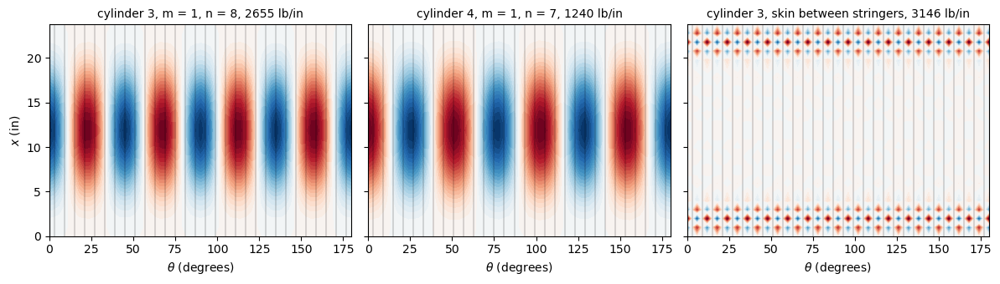

Axial buckling of stringer-stiffened cylinders#
Card and Jones [1] tested in axial compression aluminium cylinders with external or internal longitudinal stiffeners, and compared the buckling loads with a theory of eccentrically stiffened cylinders with the stiffeners averaged (“smeared”) over the skin, a membrane pre-buckling state, and clamped or simply supported ends. Here two of their cylinders with integral rectangular stringers are modelled with discrete stringers, as in Natural frequencies of stringer-stiffened cylinders:
the skin with the BFSC cylinder element of Sanders-type kinematics,
BFSCCylinderSanders;each stringer with the BFSC plate element
BFSCPlate2Dof bfscplate2d, in the plane \((x, r)\) of the stringer, connected to the skin as described in that tutorial.
The linear buckling problems \((\boldsymbol{K}_{C0} + \lambda \boldsymbol{K}_G)\boldsymbol{\phi} = \boldsymbol{0}\), see Analyses, are solved with structsolve.lb. The model is given by the module stiffened_cylinder.py, next to this notebook, see Tutorials.
Cylinders, geometry and material#
Table I of [1] gives four cylinders with integral stiffeners, machined from aluminium plates, two 38.00 in long (cylinders 1 and 2) and two 23.75 in long (cylinders 3 and 4), each pair with external and internal stiffeners. Cylinders 3 and 4, the shorter ones, are modelled here: their models need fewer elements along the axis and are solved within about a minute each. The values below, in inches and pounds-force, are those of Table I for \(t\), \(L\) and \(R\), the radius of the middle surface, and of its footnote for \(E\) and \(\mu\), and those of Figure 2(b) of [1] for the stiffeners: 0.097 in wide, at a spacing of 1.00 in, 0.33 in from the surface of the skin opposite to the stiffeners to their tip, as drawn in Figure 2(b), with fillets of radius 0.03 in, which are not modelled. The spacing gives 60 stiffeners, \(2 \pi \, 9.55/1.00 = 60.0\). The plate of a stringer goes from the middle surface of the skin to the tip, of height \(H_s = 0.33 - t/2\).
[1]:
import time
import numpy as np
import matplotlib.pyplot as plt
from scipy.sparse.linalg import spsolve
from structsolve import lb
from stiffened_cylinder import StiffenedCylinder, wave_numbers, W
# Table I of Card and Jones (1966), with the values of N in lb/in
cylinders = {
3: dict(side='external', t=0.0275, L=23.75, R=9.55, At=3.70,
Pe=127.2e3, ne=7, Ne=2120., Nc=2595., Ns=1326.),
4: dict(side='internal', t=0.0280, L=23.75, R=9.55, At=3.63,
Pe=58.0e3, ne=6, Ne=965., Nc=1226., Ns=722.),
}
E = 10.5e6 # psi
mu = 0.32
nstringers = 60
bs = 0.097 # in, Figure 2(b)
depth = 0.33 # in, from the skin surface opposite to the stiffeners
for k, c in cylinders.items():
Hs = depth - c['t']/2
area = 2*np.pi*c['R']*c['t'] + nstringers*bs*Hs
print('cylinder %d: H_s = %.4f in, modelled area %.2f in^2, '
'A_t of Table I %.2f in^2, P_e/(2 pi R) = %.0f lb/in'
% (k, Hs, area, c['At'], c['Pe']/(2*np.pi*c['R'])))
cylinder 3: H_s = 0.3163 in, modelled area 3.49 in^2, A_t of Table I 3.70 in^2, P_e/(2 pi R) = 2120 lb/in
cylinder 4: H_s = 0.3160 in, modelled area 3.52 in^2, A_t of Table I 3.63 in^2, P_e/(2 pi R) = 967 lb/in
Two remarks on Table I of [1]:
the columns \(\bar{N}_e\), \(\bar{N}_c\) and \(\bar{N}_s\) of Table I(a) are headed kips/in., but their values are in lb/in: the experimental load \(\bar{P}_e\) = 127.2 kips of cylinder 3 gives \(\bar{P}_e/(2 \pi R)\) = 2120 lb/in, the value of \(\bar{N}_e\), as printed above; in Table I(b), headed MN/m, the values are in kN/m;
the total areas \(A_t\) of Table I are 6 % and 4 % larger than the areas of the model, from the dimensions of Figure 2(b) with the overlap of the stringers with the half thickness of the skin. The model follows Figure 2(b) and is not adjusted to \(A_t\).
The three linear buckling analyses below differ in their pre-buckling state and end conditions:
membrane, clamped: the membrane pre-buckling state of the theory of [1], a uniform axial strain \(\epsilon\) without hoop stress, \(N_{xx} = E t \epsilon\) in the skin and \(E b_s \epsilon\) in the stringers,
KG_membrane()instiffened_cylinder.py, with the clamped ends of the theory, \(u = v = w = w_{,x} = 0\), and the end edges of the stringers clamped; compared with \(\bar{N}_c\);membrane, simply supported: the same pre-buckling state with the simply supported ends of the theory, \(N_x = v = w = M_x = 0\), i.e. \(v = w = 0\) and \(u\), \(w_{,x}\) free, and \(V = W = W_{,Y} = 0\) along the end edges of the stringers; compared with \(\bar{N}_s\);
linear pre-buckling, clamped: the test idealized, ends potted, ground flat and loaded by the platens of the testing machine [1]: both ends clamped, one with a uniform axial shortening of the skin and of the stringers, the pre-buckling state being the linear static solution, with the radial displacement restrained at the ends,
KG()instiffened_cylinder.py; compared with the experimental \(\bar{N}_e\).
The half \(0 \le \theta \le \pi\) of each cylinder is modelled, with planes of symmetry midway between two stringers, which gives one mode of each pair of modes \(\cos n\theta\) and \(\sin n\theta\) of the same load. The critical load is given as the axial force per unit length of circumference, \(\bar{N} = P/(2 \pi R)\), with \(P\) the force on the whole cylinder.
The geometric stiffness of the stringers in their plane#
The geometric stiffness matrix of the BFSC plate element has the terms of its out-of-plane displacement \(W\) only, those of the von Karman kinematics, see bfscplate2d. A stringer carries about half of the axial force and buckles with the skin in its own plane, with the radial displacement \(V = w\). Its geometric stiffness in its plane, the counterpart of the terms of \(w\) of the skin,
is added by KG_inplane() in stiffened_cylinder.py, with the interpolation rows of the element, update_Sv_x() and update_Sv_y(). Without it, the axial force of the stringers does not destabilize the cylinder, as the cell below shows for cylinder 3, membrane pre-buckling and simply supported ends, on the mesh used below:
[2]:
def build(k, nx, nbay, nh, ends):
c = cylinders[k]
return StiffenedCylinder(R=c['R'], L=c['L'], h=c['t'], E=E, nu=mu,
rho=0., nstringers=nstringers, bs=bs,
Hs=depth - c['t']/2, side=c['side'], nx=nx,
nbay=nbay, nh=nh, kinematics='sanders',
half=True, free_axial=(ends == 'SS'))
def modes_full(model, bu, eigvecs):
out = np.zeros((model.N, eigvecs.shape[1]))
for i in range(eigvecs.shape[1]):
ur = np.zeros(model.Nr)
ur[bu] = eigvecs[:, i]
out[:, i] = model.Z @ ur
return out
def membrane(k, nx, nbay, nh, ends, inplane=True, num_eigvalues=10):
model = build(k, nx, nbay, nh, ends)
c = cylinders[k]
K = model.reduce(model.KC0())
eps = -1e-3
KG = model.KG_membrane(eps)
if not inplane:
N = np.zeros((len(model.str_elements), len(model.points)**2, 3))
N[:, :, 0] = E*bs*eps
KG = KG - model.KG_inplane(N)
KG = model.reduce(KG)
bu = ~model.constrained(ends)
lam, eigvecs = lb(K[bu, :][:, bu], KG[bu, :][:, bu],
num_eigvalues=num_eigvalues, silent=True)
P = model.axial_force_membrane(eps)
Ncr = lam*abs(P)/(2*np.pi*c['R'])
modes = modes_full(model, bu, eigvecs)
mn = [wave_numbers(model, modes[:, i]) for i in range(len(lam))]
return model, Ncr, mn, modes
mesh = (25, 2, 2)
for inplane in [True, False]:
t0 = time.time()
model, Ncr, mn, modes = membrane(3, *mesh, 'SS', inplane=inplane,
num_eigvalues=4)
print('in-plane terms %-5s: N_cr = %.0f lb/in, (m, n) = %s, %.0f s'
% (inplane, Ncr[0], mn[0], time.time() - t0))
in-plane terms True : N_cr = 1354 lb/in, (m, n) = (1, 7), 10 s
in-plane terms False: N_cr = 2856 lb/in, (m, n) = (1, 7), 49 s
Without the in-plane terms the critical load is 2.1 times larger, with the same mode. The stringers carry 53 % of the axial force of the model of cylinder 3, the ratio of their area to the total area, and without these terms this part of the force does not act on the radial displacement of the stringers, which is the normal displacement \(w\) of the skin. The analyses below include the terms.
Mesh convergence#
Cylinder 3, membrane pre-buckling and clamped ends, with three meshes of nx nodes along \(x\), nbay skin elements between two stringers and nh stringer elements along the height, the three lowest critical loads:
[3]:
meshes = [(13, 2, 1), (25, 2, 2), (37, 4, 3)]
for m in meshes:
t0 = time.time()
model, Ncr, mn, modes = membrane(3, *m, 'CC', num_eigvalues=4)
print('nx=%2d, nbay=%d, nh=%d, %6d dofs: N_cr = %s lb/in, '
'(m, n) = %s, %.0f s'
% (*m, model.Nr, np.array2string(Ncr[:3], precision=0),
mn[:3], time.time() - t0))
nx=13, nbay=2, nh=1, 12610 dofs: N_cr = [2643. 2662. 2842.] lb/in, (m, n) = [(1, 8), (1, 9), (1, 7)], 3 s
nx=25, nbay=2, nh=2, 31750 dofs: N_cr = [2601. 2618. 2797.] lb/in, (m, n) = [(1, 8), (1, 9), (1, 10)], 10 s
nx=37, nbay=4, nh=3, 80290 dofs: N_cr = [2590. 2607. 2785.] lb/in, (m, n) = [(1, 8), (1, 9), (1, 10)], 38 s
The three lowest critical loads, of modes with one axial half-wave, change by 0.4 % from the middle mesh, used below, to the finest one. The modes of the skin between the stringers, with one half-wave in each bay, need finer meshes than these modes of the whole stiffened shell; they are above them for these cylinders, see the last figure below.
Membrane pre-buckling: discrete stringers and the smeared theory#
[4]:
results = {}
for k in cylinders:
for ends in ['CC', 'SS']:
t0 = time.time()
results[(k, ends)] = membrane(k, *mesh, ends)
print('cylinder %d, %s: %.0f s' % (k, ends, time.time() - t0))
cylinder 3, CC: 12 s
cylinder 3, SS: 12 s
cylinder 4, CC: 10 s
cylinder 4, SS: 12 s
Linear pre-buckling with clamped ends#
The end \(x = 0\) is clamped and the end \(x = L\) is clamped with the prescribed axial displacement \(u = U = -\delta\) of the skin and of the stringers, see Assembling a model. The force \(P\) is the sum of the reactions at the degrees of freedom of \(u\) and \(U\) of the end \(x = L\), twice that of the half model, and the critical load is \(\lambda P\):
[5]:
def linear_prebuckling(k, nx, nbay, nh, num_eigvalues=10):
c = cylinders[k]
model = build(k, nx, nbay, nh, 'CC')
K = model.reduce(model.KC0())
bk = model.constrained('CC')
bu_end, bu_end_y = model.axial_dofs(nx - 1)
bk |= bu_end | bu_end_y
bu = ~bk
delta = 1e-3
ur = np.zeros(model.Nr)
ur[bu_end] = -delta
Kuu = K[bu, :][:, bu].tocsc()
Kuk = K[bu, :][:, bk]
ur[bu] = spsolve(Kuu, -Kuk @ ur[bk])
P = 2*(K @ ur)[bu_end].sum()
KG = model.reduce(model.KG(model.Z @ ur))
lam, eigvecs = lb(K[bu, :][:, bu], KG[bu, :][:, bu],
num_eigvalues=num_eigvalues, silent=True)
Ncr = lam*abs(P)/(2*np.pi*c['R'])
modes = modes_full(model, bu, eigvecs)
mn = [wave_numbers(model, modes[:, i]) for i in range(len(lam))]
print('cylinder %d: P/delta = %.4g lb/in, E A/L of the model = %.4g lb/in'
% (k, abs(P)/delta, model.axial_force_membrane(1.)/c['L']))
return model, Ncr, mn, modes
for k in cylinders:
t0 = time.time()
results[(k, 'test')] = linear_prebuckling(k, *mesh)
print('cylinder %d, linear pre-buckling: %.0f s' % (k, time.time() - t0))
cylinder 3: P/delta = 1.554e+06 lb/in, E A/L of the model = 1.543e+06 lb/in
cylinder 3, linear pre-buckling: 46 s
cylinder 4: P/delta = 1.568e+06 lb/in, E A/L of the model = 1.556e+06 lb/in
cylinder 4, linear pre-buckling: 11 s
Comparison#
[6]:
print('cyl. side analysis FE N_cr (m, n)'
' [1]: N FE/[1]')
for k, c in cylinders.items():
for key, name, ref, label in [
('CC', 'membrane, clamped', c['Nc'], 'N_c (theory)'),
('SS', 'membrane, simply supp.', c['Ns'], 'N_s (theory)'),
('test', 'linear pre-buckling, clamped', c['Ne'],
'N_e (test), n_e = %d' % c['ne'])]:
model, Ncr, mn, modes = results[(k, key)]
print('%3d %-8s %-28s %6.0f %-8s %5.0f %-20s %5.3f'
% (k, c['side'], name, Ncr[0], mn[0], ref, label,
Ncr[0]/ref))
cyl. side analysis FE N_cr (m, n) [1]: N FE/[1]
3 external membrane, clamped 2601 (1, 8) 2595 N_c (theory) 1.002
3 external membrane, simply supp. 1354 (1, 7) 1326 N_s (theory) 1.021
3 external linear pre-buckling, clamped 2655 (1, 8) 2120 N_e (test), n_e = 7 1.252
4 internal membrane, clamped 1226 (1, 7) 1226 N_c (theory) 1.000
4 internal membrane, simply supp. 726 (1, 6) 722 N_s (theory) 1.006
4 internal linear pre-buckling, clamped 1240 (1, 7) 965 N_e (test), n_e = 6 1.284
The ten lowest critical loads of the membrane pre-buckling state with clamped ends:
[7]:
for k in cylinders:
model, Ncr, mn, modes = results[(k, 'CC')]
print('cylinder %d: ' % k + ', '.join('%.0f (%d, %d)' % (N, m, n)
for N, (m, n) in zip(Ncr, mn)))
cylinder 3: 2601 (1, 8), 2618 (1, 9), 2797 (1, 10), 2800 (1, 7), 3087 (1, 11), 3094 (2, 10), 3135 (2, 11), 3146 (2, 9), 3256 (2, 12), 3310 (1, 6)
cylinder 4: 1226 (1, 7), 1248 (1, 8), 1436 (1, 9), 1481 (1, 6), 1486 (2, 9), 1488 (2, 8), 1593 (2, 10), 1652 (2, 7), 1708 (1, 10), 1781 (2, 11)
The buckling modes of the linear pre-buckling analyses, the normal displacement \(w\) of the skin over the developed half cylinder, with the stringers as thin lines. The lowest mode of the skin between the stringers of cylinder 3, with one half-wave in each bay, is also shown:
[8]:
def plot_w(ax, model, mode, title):
w = model.skin_field(mode, W)
xx, tt = np.meshgrid(model.xlin, np.degrees(model.theta), indexing='ij')
lim = np.abs(w).max()
ax.contourf(tt, xx, w, levels=np.linspace(-lim, lim, 41), cmap='RdBu_r')
for th in np.degrees(model.theta_stringer):
ax.axvline(th, color='k', lw=0.2)
ax.set_title(title, fontsize=10)
ax.set_xlabel(r'$\theta$ (degrees)')
fig, axes = plt.subplots(1, 3, figsize=(12, 3.5), sharey=True)
for ax, k in zip(axes[:2], [3, 4]):
model, Ncr, mn, modes = results[(k, 'test')]
plot_w(ax, model, modes[:, 0], 'cylinder %d, m = %d, n = %d, %.0f lb/in'
% (k, *mn[0], Ncr[0]))
model, Ncr, mn, modes = results[(3, 'test')]
local = [i for i, (m, n) in enumerate(mn) if n >= 25]
if local:
i = local[0]
plot_w(axes[2], model, modes[:, i],
'cylinder 3, skin between stringers, %.0f lb/in' % Ncr[i])
axes[0].set_ylabel('$x$ (in)')
plt.tight_layout()
plt.show()

Discussion#
Discrete and smeared stringers. With the membrane pre-buckling state of the theory, the discrete model is within 0.2 % of \(\bar{N}_c\) and 2.1 % of \(\bar{N}_s\) for cylinder 3, and within 0.6 % of both for cylinder 4. The ratio of the clamped critical loads of the external and internal stringers, 2.12, is that of the theory. The stringers are closely spaced, about 7 to 9 stringers per circumferential wave of the modes, and the discrete model, with the bending, extension and torsion of the stringers given by the plate elements, behaves as the smeared theory for these cylinders. The lowest modes have \(n = 8\) and \(n = 7\) circumferential waves, one more than the numbers of waves into which the cylinders buckled in the tests, \(n_e\) of Table I; the modes with \(n_e\) waves are 8 % and 21 % above the lowest ones, see the list above.
Pre-buckling state. The linear pre-buckling state of the clamped cylinders, with the radial displacement restrained at the ends, gives critical loads 2.1 % and 1.1 % above those of the membrane state, in line with the conclusion of [1] that a membrane pre-buckled shape is sufficient for the assessment of the eccentricity effects. The lowest mode of the skin between the stringers, near the ends, where the pre-buckling state departs from the membrane state, is above the lowest mode of the whole cylinder (the value of the figure, with the mesh used, is not converged). This agrees with the strain gages of [1], which indicated no local buckling before general buckling.
Tests. The experimental loads are 80 % and 78 % of the linear pre-buckling loads of the model, close to their ratios to the clamped theory, 82 % and 79 %; for all their cylinders, [1] gives the experimental loads as 70 to 95 % of the clamped theory. The model is that of a perfect cylinder: [1] names the neglect of initial imperfections, besides the boundary conditions and the pre-buckling solution of the theory, as a contribution to the difference between theory and experiment. The externally stiffened cylinders buckled with a loud report and diamond-shaped buckles of large amplitude [1]. The model also leaves out the two butt joints of each cylinder, with doubler plates and rivets, the actual restraint of the potted ends and the fillets of the stiffeners, and assumes a linear elastic material, whereas the stress-strain curves of [1] are linear up to at least 85 % of the maximum stress. The model is not adjusted to the tests.
Reference#
[1] Card, M. F., and Jones, R. M., Experimental and theoretical results for buckling of eccentrically stiffened cylinders, NASA TN D-3639, 1966, NTRS 19660027866.